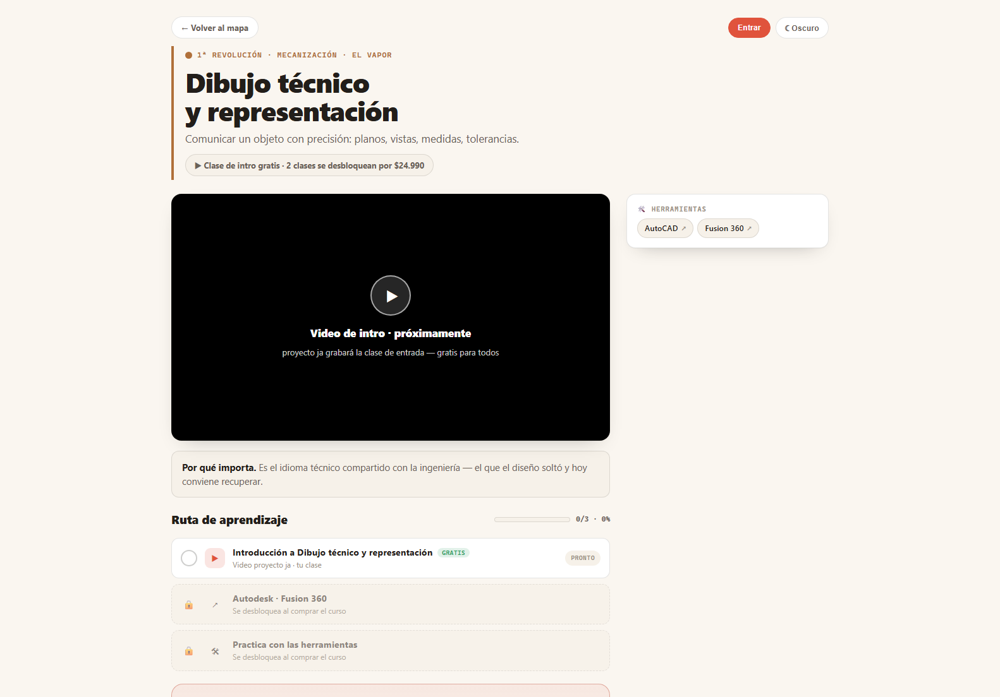
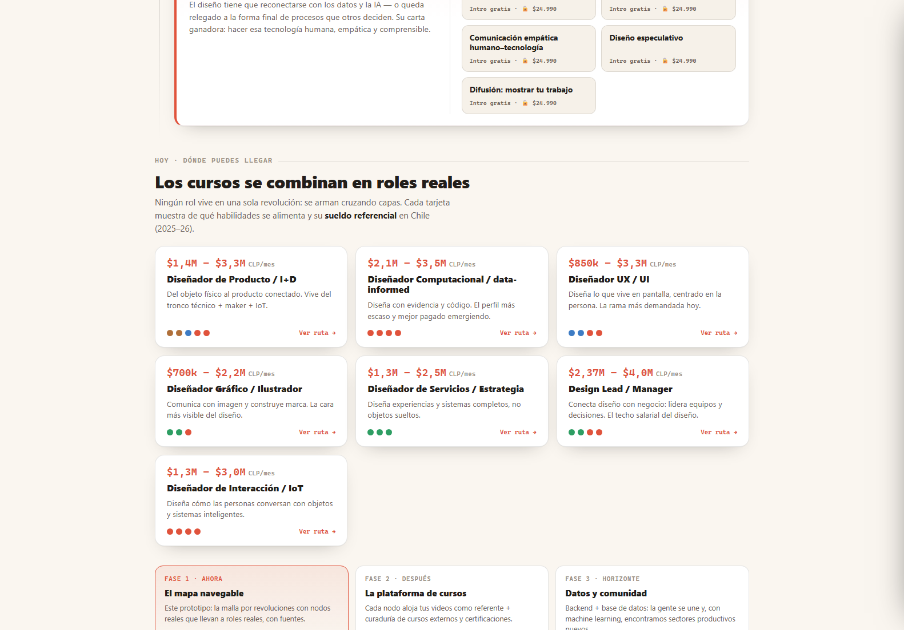

esdiseño: La Malla del Diseño
La formación del diseñador chileno convertida en una malla navegable de eras, cursos y roles.

Una plataforma de aprendizaje que estructura la formación de un diseñador como una malla curricular recorrible: cuatro eras, veintidós cursos, sesenta y seis clases y siete roles profesionales hacia los que se puede derivar. En vez de una lista de cursos sueltos, el mapa muestra de dónde viene cada cosa y hacia dónde lleva.
La decisión de arquitectura que la sostiene es que la aplicación funciona completa sin cuenta. Todo el contenido y la navegación andan en modo invitado, guardando el avance en el propio navegador; la base de datos solo agrega cuentas y progreso sincronizado entre dispositivos. Si el backend se cae o alguien no quiere registrarse, la plataforma sigue siendo usable en vez de mostrar una pantalla de error.
Lo que el prototipo ya muestra, y que no es menor: cada curso tiene su ruta de aprendizaje con clase de intro gratis y el resto desbloqueable por $24.990, con certificación en algunos y enlaces a la herramienta real que se enseña (AutoCAD, Fusion 360). Y los siete roles de salida no son etiquetas: cada uno declara de qué habilidades se alimenta y su sueldo referencial en Chile, de $700 mil a $4 millones mensuales según el rol. Eso convierte la malla en algo que se puede usar para decidir, no solo para mirar.
Lo que falta no es técnico: es el contenido de las clases, grabar los videos de intro, conectar el dominio propio y el inicio de sesión con cuenta. La propia plataforma declara su hoja de ruta en tres fases (el mapa navegable, la plataforma de cursos, y datos y comunidad) y hoy está en la primera.
Bitácora
- 2026-07-04En línea, sin dominio propioQueda desplegada y accesible. El dominio esdiseño.cl está comprado y el plan de conexión escrito, pero sin ejecutar: por ahora vive en una dirección provisoria.
- 2026-07-04Modo invitado primeroSe decide que la plataforma sea 100% usable sin backend y que la base de datos solo sume cuentas y progreso. El esquema y los datos iniciales quedan escritos, pendientes de cargar.
- 2026-07-04Arranca el proyectoSe define la estructura: 4 eras, 22 cursos, 66 clases, 7 roles.
Pantallas

